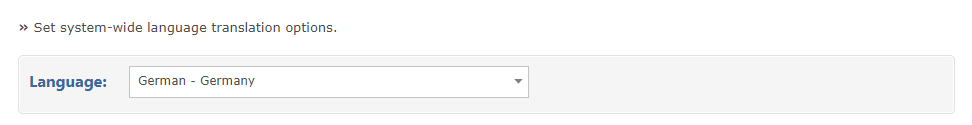
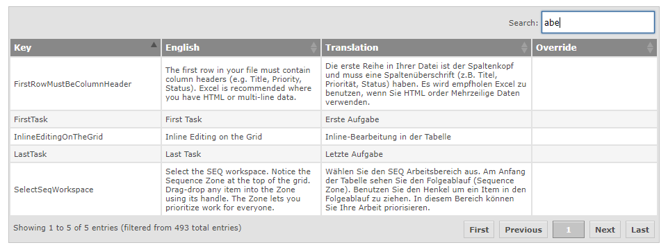

For all active languages, you can manage the translation files from this screen.

Select the language for which you need to amend the translations. When the language is selected, the current translations for that language will be shown.

You can filter the translations, by key or by text through the search box on the top right.
Click the Override table cell to create or edit the new translation value.